Pasta
130 recipes, 130 with a method, in 5 groups.
Doughs4 recipes, 4 with a method
Cocoa Dough
954 g
5 ingredients
Egg Dough
954 g
4 ingredients
Green Dough
998 g
4 ingredients
Semolina Dough
750 g
4 ingredients
Fillings30 recipes, 30 with a method
Aubergine and Ricotta Filling
7 ingredients
Brisket and Caramelized Onion Filling
8 ingredients
Butternut Squash and Marjoram Filling
7 ingredients
Butternut Squash and Truffle Filling
5 ingredients
Caramelized Onion and Parmigiano Filling
12 ingredients
Charred Eggplant and Ricotta Filling
3 ingredients
Crab and Salmon Mousse Filling
15 ingredients
Dressed Crab Filling
18 ingredients
Duck Confit Filling
8 ingredients
Goat's Cheese and Cream Cheese Filling
5 ingredients
King Prawn Filling
5 ingredients
Langoustine Filling
1 ingredient
Mortadella and Ricotta Filling
5 ingredients
Oxtail and Celeriac Filling
5 ingredients
Parmigiano Fonduta Filling
4 ingredients
Polenta Filling
4 ingredients
Potato and Crème Fraîche Filling
6 ingredients
Potato, Ricotta, and Fiore Sardo Filling
5 ingredients
Prawn and Smoked Salmon Filling
5 ingredients
Prosciutto, Goat Cheese and Spinach Filling
7 ingredients
Pulled Pork and Chorizo Filling
9 ingredients
Ricotta, Apple and Dried Fruit Filling
12 ingredients
Sheep's and Cow's Milk Ricotta Filling
3 ingredients
Smoked Potato and Egg Yolk Filling
6 ingredients
Squash and Mostarda Filling
13 ingredients
Taleggio Fonduta Filling
4 ingredients
Truffle Filling
10 ingredients
Turkey and Butternut Squash Filling
12 ingredients
Watercress and Egg Yolk Filling
7 ingredients
White and Brown Crab Filling
3 ingredients
Shapes37 recipes, 37 with a method
Hand cut
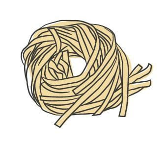
Fettuccine
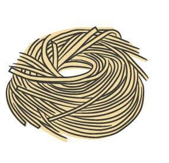
Maccheroncini di Campofilone
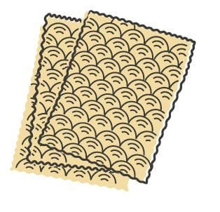
Mandilli di Seta

Pappardelle
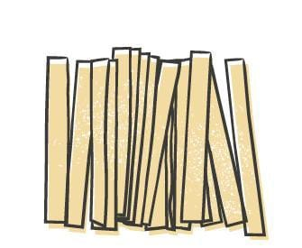
Pizzoccheri
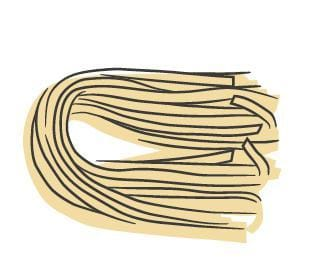
Strangozzi
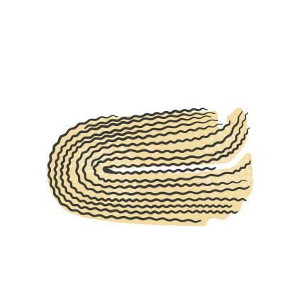
Tagliatelle
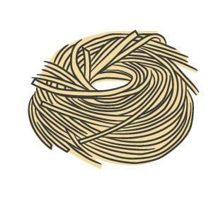
Tagliolini
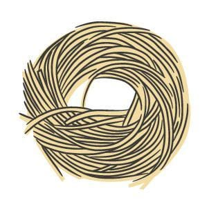
Tajarin
Hand shaped
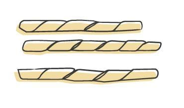
Busiate

Fileja

Gnudi
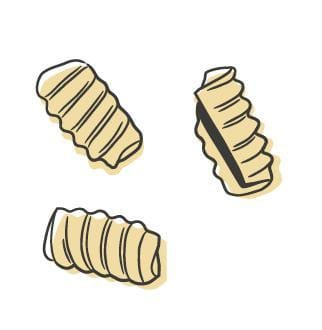
Malloreddus
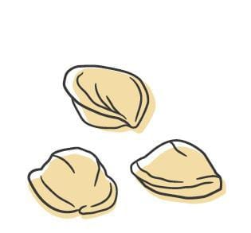
Orecchiette

Pici

Ricotta Gnocchi

Stricchetti

Trofie
Filled

Agnolotti

Agnolotti dal Plin
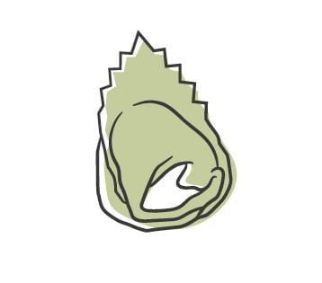
Balanzoni

Cannelloni

Cappelletti
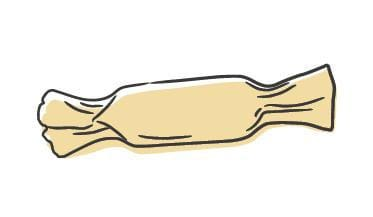
Caramelle
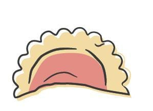
Casunziei
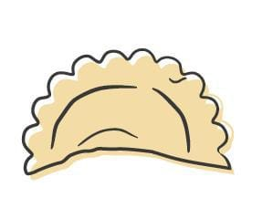
Cjalsons

Culurgiones

Mezzelune

Occhi
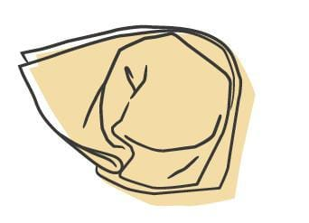
Pansotti

Ravioli
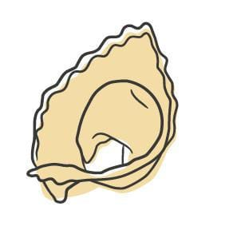
Tortelli
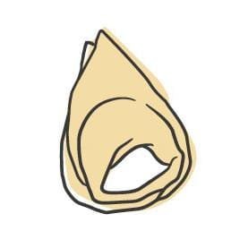
Tortellini
Outliers


Dishes55 recipes, 55 with a method
Aubergine Ravioli
4 · 2 h +
7 ingredients
Butternut Squash and Marjoram Ravioli
4 · 1 h 30 min
12 ingredients
Butternut Squash Ravioli
6 · 3 h
13 ingredients
Crab Ravioli
4 · 1h 30min
11 ingredients
Crab Ravioli with Crab Sauce
4 · 3 h
29 ingredients
Crab with Turnip
4 · 45 min
Duck Ravioli with Langoustines
4 · 14h 20min
14 ingredients
Goat's Cheese Ravioli
4 · 30 min
10 ingredients
Langoustine Ravioli
4 · 2 h 30 min
11 ingredients
Oxtail Ravioli
6 · 2 h 30 min
Pink Prawn Ravioli
2 · 1 h 40 min
15 ingredients
Polenta Ravioli
6 · 5 h
8 ingredients
Prawn and Smoked Salmon Ravioli
2 · 1 h 30 min
12 ingredients
Pulled Pork Raviolo
8 · 5 h
7 ingredients
Smoked Potato Ravioli
4 · 3 h
11 ingredients
Truffle Ravioli
8 · 2 h
17 ingredients
Turkey and Squash Ravioli
6 · 2 h
19 ingredients
Watercress and Egg Yolk Ravioli
2 · 2 h
29 ingredients
Italian-American
Fettuccine Alfredo
4-6 · 1 h plus the dough rest
6 ingredients
Penne alla Vodka
4-6 · 1 h 15 min
15 ingredients
Regional classics
Agnolotti dal Plin with Brisket and Caramelized Onion
6-8 · 8 h plus the dough rest
11 ingredients
Balanzoni Burro e Salvia
4-6 · 2 h plus the dough rest
10 ingredients
Bigoli in Salsa
4-6 · 1 h 30 min plus the dough rest
8 ingredients
Bucatini all’Amatriciana
4-6 · 40 min
7 ingredients
Busiate alla Pesto Trapanese
4-6 · 1 h plus the dough rest
8 ingredients
Canederli with Speck and Brown Butter
4-6 · 1 h 30 min plus drying the bread overnight
11 ingredients
Cjalsons
4-6 · 2 h plus the dough rest
17 ingredients
Corzetti alle Erbe
4-6 · 1 h plus the dough rest
8 ingredients
Culurgiones alla Nuorese
4-6 · 1 h 30 min plus the dough rest
9 ingredients
Maccheroncini di Campofilone al Sugo Tradizionale
4-6 · 5 h plus the dough rest
15 ingredients
Orecchiette con Cime di Rapa
4-6 · 1 h 30 min plus the dough rest
11 ingredients
Passatelli in Brodo
4-6 · 5 h
17 ingredients
Pizzoccheri alla Valtellinese
4-6 · 1 h plus the dough rest
8 ingredients
Spaghetti alla Puttanesca
4-6 · 1 h 15 min plus the caper soak
10 ingredients
Strangozzi alla Norcina
4-6 · 45 min plus the dough rest
8 ingredients
Tagliatelle alla Bolognese
4-6 · 4 h plus the dough rest
15 ingredients
Tajarin al Tartufo
4-6 · 45 min plus the dough rest
4 ingredients
Timballo alla Teramana
6-8 · 4 h
19 ingredients
Tortelli di Zucca
4-6 · 3 h plus the squash drain and the dough rest
18 ingredients
Trofie al Pesto Genovese
4-6 · 1 h 30 min plus the dough rest
8 ingredients
Modern classics
Caramelle with Caramelized Onion, Brown Butter, and Balsamic
6-8 · 5 h plus the dough rest
18 ingredients
Corzetti with Chanterelles and Aged Goat Cheese
4-6 · 1 h plus the dough rest
8 ingredients
Corzetti with Sungold Tomatoes, Pecorino, and Herbs
4-6 · 1 h plus the dough rest
10 ingredients
Eggplant-Filled Mezzelune with Simple Sauce and Ricotta Salata
6-8 · 1 h 30 plus the 2 h drain and the dough rest
8 ingredients
Pappardelle with Porcini and Veal Bolognese
4-6 · 4 h plus the dough rest
23 ingredients
Parmigiano Fonduta-Filled Tortellini in Brodo
6-8 · 5 h plus the dough rest
18 ingredients
Potato and Crème Fraîche-Filled Ravioli with Garlic and Rosemary
6-8 · 2 h 30 plus the dough rest
14 ingredients
Prosciutto and Goat Cheese-Filled Cappelletti with Pistachios
4-6 · 2 h plus the dough rest
11 ingredients
Ravioli with Taleggio Fonduta, Peas, and Speck
4-6 · 3 h plus the dough rest
13 ingredients
Rigatoni Diavola
4-6 · 30 min plus the sauce and the rigatoni
6 ingredients
Sheep's Milk Ricotta-Filled Occhi with Lemon and Bottarga
6-8 · 1 h plus the dough rest
7 ingredients
Spaghetti with Colatura, Garlic, and Bread Crumbs
4-6 · 45 min plus 3 h drying the bread
10 ingredients
Stricchetti with Smashed Peas and Prosciutto
4-6 · 1 h 30 min plus the dough rest
10 ingredients
Tagliatelle with Matsutake Mushrooms, Lemon, and Mint
4-6 · 1 h 15 min plus the dough rest
11 ingredients
Tagliatelle with Ossobuco and Soffritto
4-6 · 5 h plus the salting and the dough rest
17 ingredients